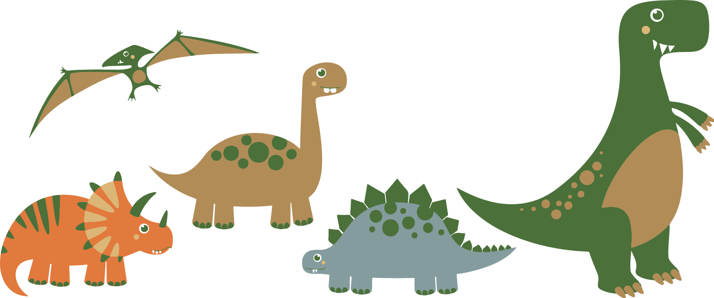

DINOSCIENCE
Max Kitay, Sarah Manning, Cassidy Jensen, Damian Howard, Jael Johnson
Tiny Rex is a friendly dinosaur! He is just like a normal T-rex except he is miniature sized and lives in what is now known as Boulder, Colorado. He loves to ski, with his mini skis of course, and hike the flatirons, although it takes him many hours to summit because of his tiny legs. Every day he wishes he could grow to full size but just can’t figure out how! He scours Boulder each day in search of a genius to help him develop a grow gun so he can achieve his full potential and fit in with the other dinosaurs of Boulder. One of these days he is sure to find the right scientist who is willing to help out…
Anna Atomic is a young scientist also living in Boulder, Colorado. She's just a normal scientist on the outside, but on the inside she has BIG dreams. Anna has been working in a nanomaterials lab ever since graduating from CU Boulder, and although it pays well, something feels wrong. The lab she works in is renowned all over the world, because everyone is looking for ways to compact their lives, but Anna feels like a world with objects so small is just meaningless. Every day, she wonders if their is something greater she could be doing with her life.
One morning after a particularly heavy snow fall, Anna Atomic was enjoying a nice cup of Joe by the fire when suddenly, a miniature T-rex sporting a sleek pair of ski's burst through the wall causing quite a rucus. "Goly Gee that's quite the enterance you made! You've wrecked my whole living room!" Anna Atomic exclaimed. "What brings a mini dinosaur like you to the living room of my humble abode?" she asks sarcastically. The dinosaur says a little dazed "oh dear, I didn't mean to crash into your wall, but would you happen to know where I can find the famous scientist Anna Atomic?"
"Why you're looking right at her" said Anna. "Oh perfect, why I have an incredibly important life altering request to ask of you!" Anna stood there in her now destroyed living room contemplating what in heck this little, but powerful dinosaur could want from her of all people. After some time has passed Anna responds "Why I might be able to help, but if I do so I ask that you do a favor for me as well". A very shocked and amazed dinosaur stood in the wall wondering what on earth she could possibly want from a dinosaur like him.
“What could I possibly help with?”. Anna paused for a long moment before answering the dinosaur as she sipped her tea. “Well you see, I have a very important investor party to go to this afternoon, but I have nobody to go with.” While explaining she began to pour a cup of tea for her surprise guest. “It would be embarrassing to show up without a plus one. And your demeanor would be a big help in securing the funding I need! In return, I can help you out with whatever you came searching for. Plus I’ll call it even for destroying my living room.” The small dinosaur was shocked by the request, but couldn’t help looking nervous at the thought of the party.

Dinosaur by rayhan maulana rikzan from the Noun Project